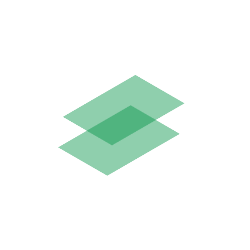

<div id="container">
  <div id="left-nav">
    <!-- <div id="menu" matRipple>  
          <i class="fas fa-bars"   ></i>
        </div> -->
    <button mat-icon-button aria-label="menu icon" id="menu-but" (click)="openToggle()">
      <mat-icon>menu</mat-icon>
    </button>

    <!-- <div id="logo">
            
        </div> -->
    <div class="container">
      <div class="search_wrap search_wrap_3">
        <div class="search_box">
          <input type="text" class="input" placeholder="Search...">
          <div class="btn btn_common">
            <i class="fas fa-search"></i>
          </div>
        </div>
      </div>
    </div>
  </div>

  <div id="right-nav">
    <button mat-raised-button id="sign-out-but" [routerLink]="'/login'">Sign Out</button>
    <div id="ava">
      
    </div>
  </div>

</div>